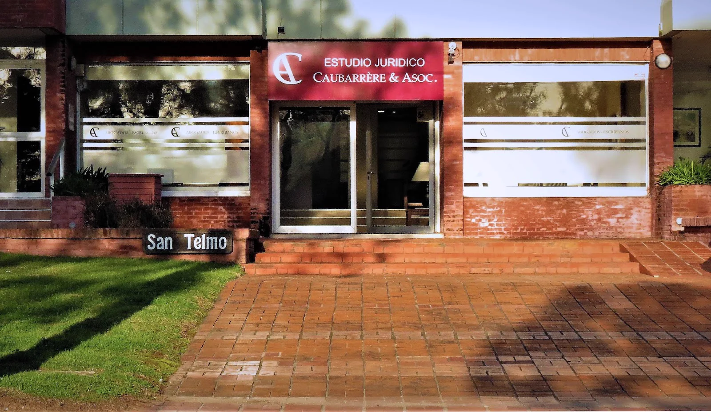

Estudio jurídico integral · Punta del Este
Caubarrere & Asociados
Cinco décadas de práctica jurídica, notarial y contable.
Abogados, escribanos y contadores con presencia en Punta del Este y Montevideo.
4249 2709
1975año de fundación
4.9calificación en Google
7reseñas públicas
Áreas de práctica
Consultas y servicios
Conocé las áreas publicadas por el estudio y elegí el motivo de tu consulta.
010203040506
Derecho civil
Asesoramiento y gestión de asuntos comprendidos dentro del área civil.
Derecho laboral
Consultas y asistencia jurídica vinculadas a relaciones de trabajo.
Derecho comercial y bancario
Asistencia para asuntos comerciales, empresariales y bancarios.
Servicios notariales
Escrituraciones, títulos automotores, poderes y certificación de firmas.
Mediación y certificados
Gestiones de mediación y expedición o tramitación de certificados.
Área contable y financiera
Asesoramiento contable y financiero dentro de un equipo integral.
Situaciones concretas
Podemos orientarte si...
El estudio reúne servicios jurídicos, notariales, contables y financieros para analizar situaciones personales y empresariales.
Necesitás realizar una escritura o revisar títulos automotores.
Tenés que otorgar un poder o certificar una firma.
Buscás una instancia de mediación para resolver un conflicto.
Necesitás gestionar certificados o documentación profesional.
Tu empresa requiere asesoramiento contable o financiero.
¿Tu situación no aparece en esta lista?
Contar mi situaciónEl estudio
Tradición profesional desde 1975
Una práctica multidisciplinaria que integra servicios jurídicos, notariales, contables y financieros para personas y empresas.
- Desde 1975
- Abogados, escribanos y contadores
- Asistencia en inglés y alemán

Equipo multidisciplinario
Tres disciplinas para abordar asuntos que requieren una visión integral.
La estructura del estudio reúne práctica jurídica, notarial y contable, con trayectoria desde 1975.
Cómo trabajamos
Un proceso legal claro
Cuatro pasos simples para pasar de la consulta inicial a una orientación concreta.
- 01
Primer contacto
Contanos brevemente la situación por teléfono.
- 02
Revisión inicial
El estudio identifica la documentación y el área que corresponde.
- 03
Orientación
Recibís una explicación clara sobre los próximos pasos posibles.
- 04
Seguimiento
La gestión continúa con comunicación durante cada etapa.
Preguntas frecuentes
Antes de consultar
Información práctica para iniciar el contacto con el estudio.
¿Qué profesionales integran el estudio?
El equipo reúne abogados, escribanos y contadores.
¿Atienden en otros idiomas?
Sí. El estudio informa asistencia en inglés y alemán mediante el 099 903 534.
¿Qué áreas cubren?
Derecho civil, laboral, comercial y bancario; servicios notariales; mediación; certificados y asesoramiento contable y financiero.
¿Dónde se encuentra la oficina?
En Design District, avenida Italia, Punta del Este.
Oficina en Punta del Este
Atención en Design District, sobre Avenida Italia.
Design District, Av. Italia esquina, 20100 Punta del Este.
Abrir en Google MapsContacto
Conversemos sobre tu consulta
Elegí el canal más cómodo y compartí una descripción breve de tu situación.